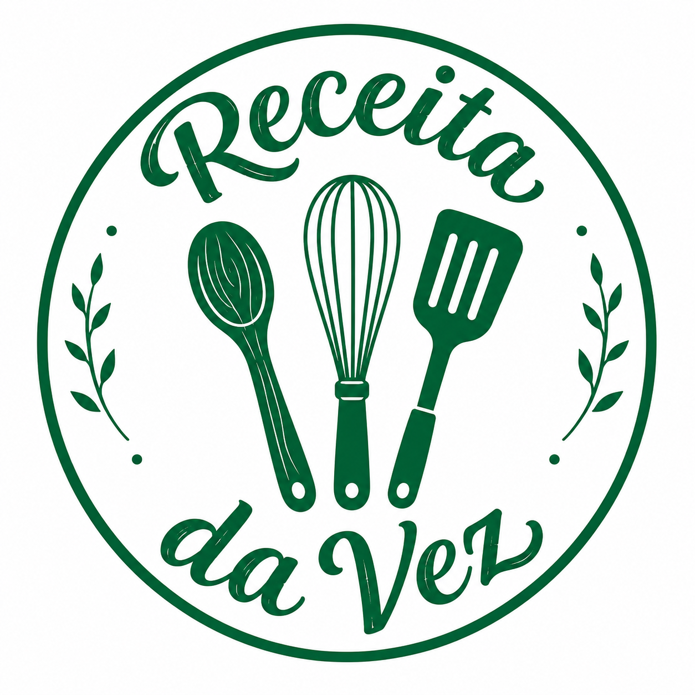

Meu primeiro post
Por: Maria E. Provin
Boas-vindas ao meu novo blog! Aqui vou compartilhar receitas que estão viralizando no momento.

Por: Maria E. Provin
Boas-vindas ao meu novo blog! Aqui vou compartilhar receitas que estão viralizando no momento.